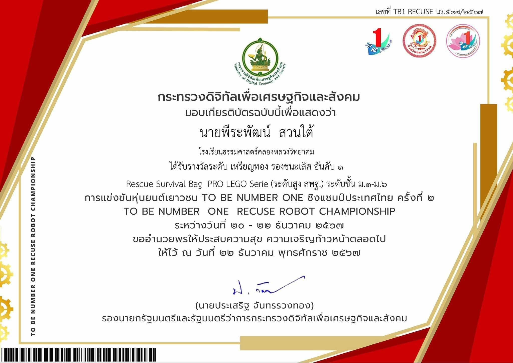

CS100 A1: My First Learning Portfolio
ประเภท: งานในรายวิชา (Course Assignment)
วันที่: ภาคเรียนที่ 1/2569
บทบาท: ผู้พัฒนาเว็บไซต์รายบุคคล
รายละเอียด: พัฒนาเว็บไซต์ Learning Portfolio แบบหน้าเดียว โดยใช้ HTML และ CSS เพื่อแนะนำตัวเอง นำเสนอผลงาน และสะท้อนสิ่งที่ได้เรียนรู้ จากการพัฒนาเว็บไซต์
ทักษะ: HTML, CSS,
การสะท้อนการเรียนรู้
สิ่งที่ฉันทำ (What I did): ผมได้ออกแบบและพัฒนาเว็บไซต์ Learning Portfolio ของตัวเอง โดยใช้ HTML ในการจัดโครงสร้างเนื้อหา และใช้ CSS ในการตกแต่งหน้าเว็บไซต์
สิ่งที่ฉันได้เรียนรู้ (What I learned): ผมได้เรียนรู้การสร้างโครงสร้างเว็บไซต์ด้วย HTML และเข้าใจมากขึ้นว่า CSS สามารถนำมาใช้จัดรูปแบบ และปรับหน้าตาของเว็บไซต์ได้อย่างไร
ความท้าทาย (Challenge): ปัญหาที่พบคือการจัดโครงสร้าง HTML และการกำหนด path ของไฟล์ CSS และรูปภาพให้ถูกต้อง ผมแก้ปัญหาโดยตรวจสอบโครงสร้างโฟลเดอร์ และทดลองเปิดเว็บไซต์ผ่าน browser เพื่อตรวจสอบ และแก้ไขทีละจุด
สิ่งที่อยากพัฒนาต่อ (Next step): ผมอยากพัฒนาเว็บไซต์ให้สามารถแสดงผลได้ดี บนอุปกรณ์หลายขนาด และเรียนรู้การใช้ Bootstrap เพื่อช่วยในการจัด layout ของเว็บไซต์
หลักฐาน (Evidence):
.jpg)
การแข่งขันหุ่นยนต์
ประเภท: การแข่งขัน (Competition)
วันที่: 20 ธันวาคม พ.ศ. 2567
บทบาท: สมาชิกทีมพัฒนาหุ่นยนต์
รายละเอียด: เข้าร่วมการแข่งขันหุ่นยนต์ โดยทำงานร่วมกับสมาชิก ในทีมในการออกแบบ เขียนโปรแกรม และทดสอบหุ่นยนต์ เพื่อให้สามารถทำภารกิจตามที่การแข่งขันกำหนดได้
ทักษะ: Robotics, Programming, Problem Solving, Teamwork
การสะท้อนการเรียนรู้
สิ่งที่ฉันทำ (What I did): ผมได้ทำงานร่วมกับสมาชิกในทีมเพื่อพัฒนา และทดสอบหุ่นยนต์ รวมถึงช่วยแก้ไขปัญหาที่เกิดขึ้น ระหว่างการเตรียมตัวสำหรับการแข่งขัน
สิ่งที่ฉันได้เรียนรู้ (What I learned): ผมได้เรียนรู้ว่าการพัฒนาหุ่นยนต์ไม่ได้ใช้เพียง ทักษะการเขียนโปรแกรม แต่ยังต้องอาศัยการวางแผน การทดลอง และการทำงานร่วมกับสมาชิกในทีม
ความท้าทาย (Challenge): ในบางครั้งหุ่นยนต์ทำงานไม่เป็นไปตามที่วางแผนไว้ ทำให้ต้องช่วยกันหาสาเหตุ ปรับวิธีการ และทดลองใหม่หลายครั้งจนสามารถทำงานได้ดีขึ้น
สิ่งที่อยากพัฒนาต่อ (Next step): ผมอยากพัฒนาทักษะด้านการเขียนโปรแกรม และศึกษาการพัฒนาหุ่นยนต์ในระดับที่สูงขึ้น เพื่อนำความรู้ไปใช้กับโครงงานอื่นในอนาคต
หลักฐาน (Evidence):
